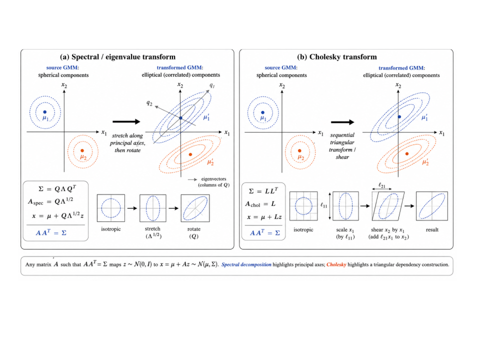
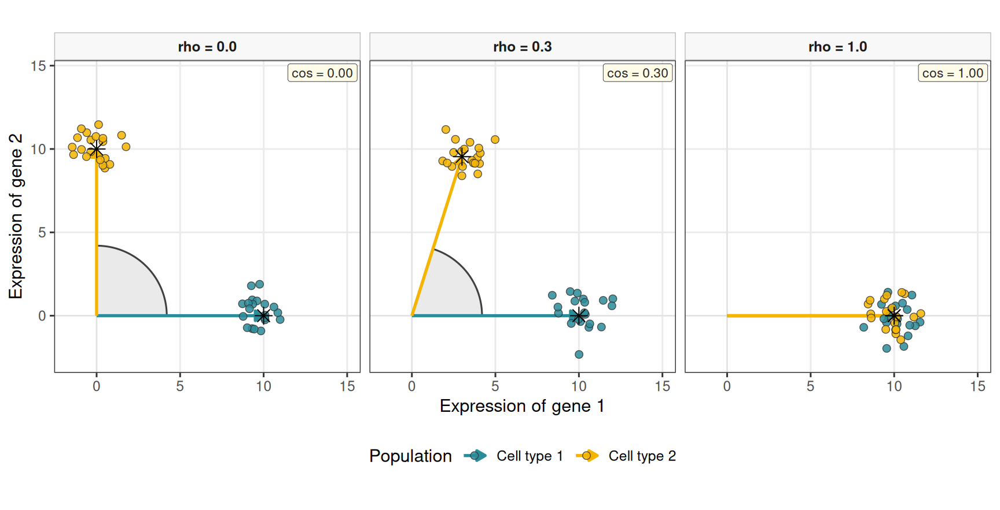
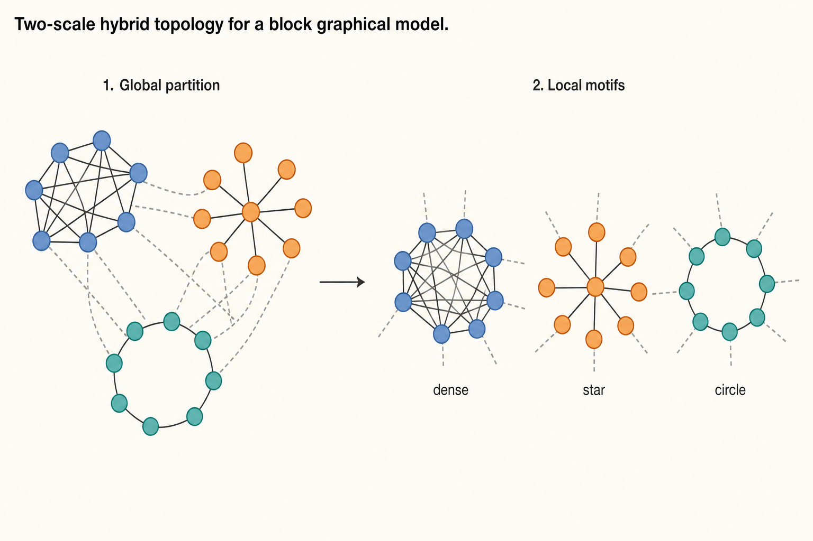
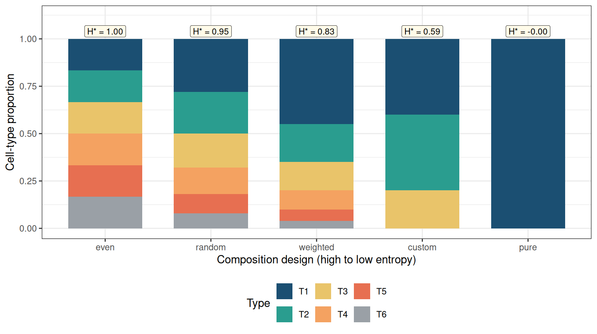

%%{init: {"theme": "sandstone"}}%%
flowchart LR
A["Graph G"] --> B["Weights W(G)"]
B --> C["Precision Ω ≻ 0"]
C --> D["Σ = Ω^{-1}"]
E["Means μ_j\n(Gram R^{1/2})"] --> F["simulate_hierarchical_grn_moments()"]
D --> F
F --> G["simulate_bulk_mixture()"]
G --> H["deconvolute_ratios()"]
Simulating synthetic pseudo-bulk mixtures for benchmarking
2026-09-04
Source:vignettes/how-to-build-synthetic-scenarios-mean-covariance.qmd
Overview
This vignette documents the synthetic first- and second-order moment generator simulate_hierarchical_grn_moments() and how its outputs feed bulk mixture simulation. Mean profiles realise a target Gram matrix of pairwise cosines through the symmetric square root (=sR^{1/2}). The default (R) is equicorrelation at level () (target_cosine); target_gram sets unequal pairs. The scale (s) (mean_scale) sets column norms without changing angles. Prefer varying the Gram across scenarios when precision weights already control second-order dependence.
Each cell type carries its own graph-constrained signed precision \boldsymbol{\Omega}_j, mapped to \boldsymbol{\Sigma}_j=\boldsymbol{\Omega}_j^{-1}. An undirected Gaussian Markov simulation separates four layers (Eq. 6): graph G_j, signed weights W(G_j), SPD precision \Omega_j, and latent Gaussians (an optional observation layer can add Poisson–log-normal or zero-inflated counts). The graph and the precision must not be conflated: a binary adjacency is almost never itself positive definite. DeCovarT draws G_j via generate_random_network_skeleton(), completes \Omega_j\succ 0 with build_normalised_precision(), and stacks the inverted slices with build_covariance_array_from_precision(). Sec. 4 develops the topology, weight, and SPD design in detail.
Pipeline API
The exported entry point orchestrates internal helpers and returns moments that can be passed to simulate_bulk_mixture(). For end-to-end benchmarking, see the bivariate toy and variance-driven hybrid; scenario grids live in scripts/fig02_bivariate_toy.R. Direct solver calls use deconvolute_ratios().
library(DeCovarT)
set.seed(42)
moments <- simulate_hierarchical_grn_moments(
n_genes = 40L,
n_celltypes = 3L,
mean_scale = 10,
target_cosine = 0.1,
precision_shift = 0.1,
precision_scale = 0.3,
prop_inhibitory = 0.5,
graph_model = "scale_free"
)
moments$objectives
#> $mean_abs_cosine
#> [1] 0.1
#>
#> $sum_euclidean_distance
#> [1] 40.24922
bulk <- simulate_bulk_mixture(
signature_matrix = moments$mean_profiles,
Sigma = moments$covariance_matrices,
p = c(0.5, 0.3, 0.2),
n = 20
)
dim(bulk$Y)
#> [1] 40 20
dim(bulk$latent_profiles) # G x J x N latent draws; input mu is shared
#> [1] 40 3 20Generate mean expression profiles
Mean signature: generate_mean_signature_matrix()
The construction uses one symbol per quantity:
- G: number of genes
- J: number of cell types, indexed by j=1,\ldots,J
- \boldsymbol{\mu}_{\cdot j}\in\mathbb{R}^{G}: column j of the mean signature
-
s: column Euclidean scale (
mean_scale; default 10) - R\in\mathbb{R}^{J\times J}: target Gram of the unit directions (pairwise cosines)
- \mathbf{Q}\in\mathbb{R}^{G\times J}: thin orthonormal frame, \mathbf{Q}^{\mathsf{T}}\mathbf{Q}=\mathbf{I}_{J}
The default Gram is equicorrelation at level \rho (target_cosine),
R_{J}(\rho) = (1-\rho)\mathbf{I}_{J} + \rho\,\mathbf{1}\mathbf{1}^{\mathsf{T}}, \tag{1}
which is positive semidefinite for \rho\in[-1/(J-1),1] and strictly definite on the open interval. A full target_gram replaces R_{J}(\rho) when some pairs should be closer than others (for example two related types at cosine 0.98 and a background at 0.2), provided the chosen matrix is symmetric and nonnegative-definite.
Columns are obtained from the symmetric (spectral) square root R^{1/2}=U\operatorname{diag}(\sqrt{\lambda})U^{\mathsf{T}},
\boldsymbol{\mu} = s\, \mathbf{Q} R^{1/2}. \tag{2}
Then \boldsymbol{\mu}^{\mathsf{T}}\boldsymbol{\mu}=s^{2}R exactly (up to rounding), so pairwise cosines match R and every column has Euclidean norm s. No cell type is a privileged reference; changing \mathbf{Q} by an orthogonal factor in \mathbb{R}^{J} does not change the Gram (see Theorem 1 and the uniqueness of vector realisations of a Gram matrix).
Note 1: Role of each factor in the equicorrelation Gram
- \mathbf{I}_{J} is the unique-variance (cosine-one) part: without it, R would be rank one.
- \mathbf{1}\mathbf{1}^{\mathsf{T}} is the rank-one all-ones matrix; it is the shared direction that makes every pair equally correlated.
- \rho scales that shared direction (the target pairwise cosine).
- 1-\rho is the residual uniqueness: as \rho\to 1, R collapses to rank one (identical columns); as \rho\to 0, R=\mathbf{I}_{J} (orthogonal columns).
- s multiplies all columns after the unit embedding, so Euclidean gaps scale with s while angles stay those of R.
Note
Theorem 1 (Orthonormal frame) Any thin \mathbf{Q} with \mathbf{Q}^{\mathsf{T}}\mathbf{Q}=\mathbf{I}_{J} yields a valid embedding of R into \mathbb{R}^{G} (G\ge J). If \mathbf{Q}_{\star}=\mathbf{Q}U with U^{\mathsf{T}}U=\mathbf{I}_{J}, then (\mathbf{Q}_{\star}R^{1/2})^{\mathsf{T}} (\mathbf{Q}_{\star}R^{1/2})=R still holds. The package default is a deterministic QR frame; passing
seeddraws a Gaussian QR (Haar-like) frame instead.
Figure 2 compares the symmetric square root used here with the lower-triangular Cholesky factor of the same R. Both are matrix square roots; they differ by an orthogonal transformation of the coordinate axes, which is exactly the Gram uniqueness (realisations are unique up to orthogonal maps of the ambient space).

The common-factor blend of a shared unit \boldsymbol{u} with private marker blocks (the previous default, closest to AutoGeneS (Aliee and Theis 2021)) is recorded in Sec. 3.3.1. It does not hit \rho exactly at finite J. Cholesky as a Monte Carlo device is in Sec. 3.3.
Figure 3 visualises three operating points (\rho\in\{0,\,0.3,\,1\}) for G=2 genes and J=2 cell types. Cell type 1 is fixed along the positive gene-1 axis; only the angular position of cell type 2 is varied so that \rho=0 is exactly orthogonal. Independent Gaussian noise is added only in this vignette chunk around each centroid (N=20 i.i.d. draws per population) to emulate within-type dispersion under an independence assumption, without altering the Gram-matrix generator. Coloured arrows mark each type’s mean direction; the shaded wedge is the angle between the two means.
This illustration is inspired by panel B in the AutoGeneS paper (Aliee and Theis 2021). It is a geometric toy for the target angle, not a plot of Eq. 2: with G=J=2 the symmetric root and the polar construction coincide up to a rotation.

AutoGeneS (Aliee and Theis (2021)).
Objectives: compute_mean_profile_objectives()
For columns of \boldsymbol{\mu},
\overline{\lvert\cos\rvert} = \frac{2}{J(J-1)} \sum_{1\le j<k\le J} \Biggl| \frac{ \boldsymbol{\mu}_{\cdot j}^{\mathsf{T}} \boldsymbol{\mu}_{\cdot k} }{ \|\boldsymbol{\mu}_{\cdot j}\|_2\, \|\boldsymbol{\mu}_{\cdot k}\|_2 } \Biggr|,
D_{\mathrm{Euc}} = \sum_{1\le j<k\le J} \|\boldsymbol{\mu}_{\cdot j}-\boldsymbol{\mu}_{\cdot k}\|_2.
AutoGeneS treats the first as a quantity to minimise and the second as a quantity to maximise (Aliee and Theis 2021). Cosine is preferred to Pearson correlation so that collinear but unequally scaled profiles remain penalised.
Note 3: Perspectives: a single geometric score for \boldsymbol{\mu}
The present API exposes two AutoGeneS-style objectives. A natural refinement is to replace them by one scalar that jointly rewards large column norms (and hence Euclidean separation) and penalises alignment.
Two candidates are immediate. The Gram determinant
V(\boldsymbol{\mu}) = \sqrt{ \det\bigl( \boldsymbol{\mu}^{\mathsf{T}}\boldsymbol{\mu} \bigr) } \tag{3}
is the volume of the parallelepiped spanned by the columns of \boldsymbol{\mu}. It vanishes under exact collinearity and grows when columns lengthen or become more orthogonal—precisely the desired MOO trade-off in one number.
Equivalently, the reciprocal condition number
\kappa_2(\boldsymbol{\mu})^{-1} = \frac{\sigma_{\min}(\boldsymbol{\mu})}{\sigma_{\max}(\boldsymbol{\mu})}, \tag{4}
available in R via
kappa(mean_profiles, exact = TRUE)(or1 / kappa(...)), measures how ill-posed linear recovery of \boldsymbol{p} from \boldsymbol{y}\approx\boldsymbol{\mu}\boldsymbol{p} is. Maximising \kappa_2(\boldsymbol{\mu})^{-1} (or minimising \kappa_2(\boldsymbol{\mu})) collapses cosine and distance into a deconvolution-centric criterion without a Pareto front.A practical next step is to expose an optional
mean_objective = c("autogenes", "volume", "condition")insimulate_hierarchical_grn_moments(), keep the constructive Gram generator for controllable scenarios, and report the chosen scalar alongside the existing pairwise diagnostics.
Appendix: Cholesky, uniqueness, and the common-factor blend
Cholesky’s factor R=LL^{\mathsf{T}} is the classical Monte Carlo square root: if \boldsymbol{z} is standard normal, L\boldsymbol{z} has covariance R (Madar 2015). The same factor embeds J unit vectors as the rows of L (padded by zeros in \mathbb{R}^{G}). The first type is aligned with the first coordinate; later types pick up successive residuals, so the embedding is order-dependent. The symmetric root R^{1/2} has no preferred axis. Figure 2 is that distinction. Vector realisations of a Gram matrix are unique only up to an orthogonal map of the ambient space: if \boldsymbol{\mu}^{\mathsf{T}}\boldsymbol{\mu}=s^{2}R, so is (\mathbf{Q}\boldsymbol{\mu})^{\mathsf{T}}
(\mathbf{Q}\boldsymbol{\mu}) for \mathbf{Q}^{\mathsf{T}}\mathbf{Q}=
\mathbf{I}. Equicorrelation Grams used as target_cosine are double-constant matrices (O’Neill 2021); Mustonen’s total-variability scalar is a related summary of a multivariate Gaussian covariance, not a substitute for the Gram construction (Mustonen 1997).
Common-factor construction
The previous package default blended a shared unit \boldsymbol{u}=G^{-1/2}\mathbf{1} with private, disjoint marker blocks \boldsymbol{v}_{j},
\tilde{\boldsymbol{\mu}}_{\cdot j} = \sqrt{\rho}\,\boldsymbol{u} +\sqrt{1-\rho}\,\boldsymbol{v}_{j}, \tag{5}
then column-normalised. Because \boldsymbol{u} is not orthogonal to the blocks, the realised cosine exceeds \rho at finite J. That construction remains the closest analogue of AutoGeneS shared-plus-private geometry (Aliee and Theis 2021); the default generator is now Eq. 2, which hits R exactly.
Undirected Gaussian Markov network generation
G \longrightarrow W(G) \longrightarrow \Omega \succ 0 \longrightarrow X_i \sim \mathcal{N}_p(\mu_i,\Omega^{-1}) \tag{6}
Here G is an undirected graph, W(G) a symmetric weighted matrix with the same off-diagonal support, \Omega a strictly positive-definite precision, and X_i an expression profile. This section covers undirected Gaussian Markov / precision-graph simulation only. generate_random_network_skeleton() draws G; build_normalised_precision() completes it to \Omega\succ 0 by an affine spectral shift; build_covariance_array_from_precision() maps each slice \boldsymbol{\Sigma}_j=\boldsymbol{\Omega}_j^{-1} (cell types need not share one network).
%%{init: {"theme": "sandstone"}}%%
flowchart LR
G["Undirected graph G"] --> W["Signed weights W(G)"]
W --> Omega["SPD precision Ω"]
Omega --> Latent["Latent Gaussian X"]
Mu["Mean design μ"] --> Latent
Latent --> Obs["Observation layer"]
Graph structure generators
\rho_{jk\mid -\{j,k\}} = -\frac{\Omega_{jk}}{\sqrt{\Omega_{jj}\Omega_{kk}}} \tag{7}
Table 1 compares the main undirected topology families used in GGM benchmarks, with R entry points. Figure 5 sketches the six families most often used in random-like network structure generation.
| Structure | Definition and controls | R entry points | Advantages | Limitations |
|---|---|---|---|---|
| Erdős–Rényi | Each edge present independently with probability q; q=d_{\mathrm{avg}}/(p-1) targets average degree |
huge::huge.generator(graph="random") (Jiang et al. 2026); BDgraph::graph.sim(graph="random") (Mohammadi and Wit 2025); DeCovarT graph_model = "erdos_renyi"
|
Exact sparsity control in expectation; few nuisance parameters | Narrow degree distribution; little modular organisation |
| Band / AR | Edge j–k if 1\le\lvert j-k\rvert\le b |
huge.generator(graph="band") (Jiang et al. 2026); BDgraph::bdgraph.sim(graph="AR(1)") / "AR(2)" (Mohammadi and Wit 2025)
|
Local dependence and controlled max degree | Artificial gene ordering; no hubs or modules |
| Hub / star | g groups; one centre linked to remaining members |
huge.generator(graph="hub") (Jiang et al. 2026); graph.sim(graph="hub") / "star" (Mohammadi and Wit 2025); DeCovarT graph_model = "hub"
|
Stress-tests high-degree regulators | Pure stars omit cross-talk |
| Scale-free | Preferential attachment (e.g. Barabási–Albert with m edges per new node) |
huge.generator(graph="scale-free") (Jiang et al. 2026); DeCovarT graph_model = "scale_free"
|
Heterogeneous degrees | Weak modularity under plain BA growth |
| Cluster / SBM | Within-block edge probability exceeds between-block (Holland et al. 1983) |
huge.generator(graph="cluster") (Jiang et al. 2026); DeCovarT graph_model = "stochastic_block_model"
|
Pathway / module structure | Equal blocks can be unrealistically regular |
| Small-world / lattice / circle | High clustering with short paths, or fixed neighbourhoods (Watts and Strogatz 1998) | DeCovarT graph_model = "small_world" (Watts–Strogatz); BDgraph::graph.sim(graph="smallworld") (Mohammadi and Wit 2025)
|
Local modules and spatial organisation | Narrow degrees; needs a defensible ordering |

Not every topology is equally useful as a gene-regulatory prior. The three simulation studies in Table 3, together with classical network biology, suggest the following reading.
| Family | Biological reading | Why it matters for DeCovarT |
|---|---|---|
| Star / hub | Master-regulator TF with many targets; one-to-many signalling | Stress-tests recovery of a few high-degree hubs that dominate partial correlations (Wu and Luo 2022; Federico et al. 2023) |
| Scale-free (BA) | Preferential attachment produces a heavy-tailed degree distribution and several hubs (Barabási and Albert 1999) | Standard high-dimensional GGM stress test used by SILGGM via huge (Zhang et al. 2018); useful for testing degree heterogeneity, but not a default empirical model of gene regulation |
| Cluster / SBM | Co-regulated modules / pathways with dense within-block links (Holland et al. 1983) | Matches pathway organisation; BLGGM’s global block partition is SBM-like before finer within-block motifs (Wu and Luo 2022) |
| Small-world | High local clustering with short paths (ring + shortcuts) (Watts and Strogatz 1998) | Local co-expression neighbourhoods plus long-range regulatory shortcuts; useful when modularity is soft rather than hard blocks (Federico et al. 2023) |
| Band / AR | Ordered local dependence only | Useful numerical control, but gene indices rarely encode a natural order—limited biological fidelity (Zhang et al. 2018) |
| Erdős–Rényi | Homogeneous random wiring | Null / baseline sparsity; little pathway or hub structure (Zhang et al. 2018) |
Note 4: The scale-free hypothesis: a useful stress test, not a biological default
The phrase scale-free network usually means that the degree distribution follows a power law, \Pr(K=k)\propto k^{-\alpha}, at least above a lower cut-off. This statistical statement is distinct from the Barabási–Albert (BA) growth mechanism. Preferential attachment can generate a power law, but observing a heavy-tailed degree distribution does not establish preferential attachment; other mechanisms can produce similar tails, and variants of preferential attachment need not produce a pure power law (Lima-Mendez and van Helden 2009; Broido and Clauset 2019).
Whether biological networks are scale-free has therefore remained contested. Early claims often relied on approximately straight log–log degree plots. Such plots are not goodness-of-fit tests: binning, the plotting scale, a small number of hubs, and incomplete or biased sampling can all make non-power-law distributions appear linear. The underlying graph representation matters as well. For example, pool metabolites can become artificial hubs in metabolic graphs, while protein-interaction networks depend strongly on the assay and sampling scheme (Lima-Mendez and van Helden 2009). A power law should instead be fitted to the discrete degree data, tested for plausibility, and compared on the same support with alternatives such as log-normal, exponential, stretched-exponential, and power-law-with-cut-off distributions.
The evidence is not uniformly negative. Using adjacency-spectrum distributions rather than degree alone, Takahashi and colleagues classified eight protein–protein interaction networks as scale-free (Takahashi et al. 2012). Importantly, this was a relative model-selection result: BA-like networks fitted better than the two candidate alternatives, Erdős–Rényi and Watts–Strogatz networks. It did not show that a power law was an adequate absolute model, that preferential attachment generated the observed networks, or that unobserved interactions would preserve the classification. The authors explicitly noted both the restricted candidate set and possible sampling artefacts.
A broader test of 928 real-world network data sets reached a more cautious conclusion (Broido and Clauset 2019). Across all domains, only 4% met the strongest scale-free criterion, whereas a log-normal distribution fitted as well as or better than a power law for 88% of degree distributions. Among the biological networks, 63% showed neither direct nor indirect evidence of scale-free structure, although 6% met the strongest criterion, principally metabolic networks. These proportions depend on the network corpus and the operational definition of scale-freeness, but they reject a universal scale-free law rather than excluding scale-free structure from every biological system.
Table 3 summarises how recent simulation studies combine topology, precision construction, and mean / observation models.
| Source | Graph structures | Precision construction | Mean / observation | Purpose |
|---|---|---|---|---|
| PLNnetwork (Chiquet et al. 2018) | Erdős–Rényi, preferential attachment, affiliation | \Omega = vG + \operatorname{diag}(\lvert\lambda_{\min}(vG)\rvert + u) | Latent log-abundance XB; compositional / multinomial counts | Count-network estimators under compositionality |
| SILGGM (Zhang et al. 2018) | Band, hub, Erdős–Rényi, scale-free via huge
|
Package covariance / precision simulation | Centred Gaussian; focus on precision entries | Large-p inferential and computational stress tests |
| BLGGM (Wu and Luo 2022) | Block mixtures of dense, circle, star, signed modules | Module matrices with structured signed off-diagonals | Cell-type-specific \mu_k, \Omega_k; expression-dependent dropout | Joint clustering, heterogeneous networks, zero inflation |
Several conclusions follow.
- Band is not intrinsically a random-graph model: its support is usually deterministic once the bandwidth is fixed. Hub constructions are often partly deterministic as well. Erdős–Rényi, preferential attachment, and stochastic block models are genuinely stochastic.
- A positive off-diagonal entry in \Omega encodes a negative partial correlation (Eq. 7). Uniformly positive precision weights therefore induce uniformly negative edgewise partial correlations; random or signed biological weights are needed when activation-like and inhibition-like associations matter.
-
BLGGM is a two-scale hybrid (Wu and Luo 2022), shown in Figure 6:
- Global partition. Genes are assigned to blocks (a stochastic-block–like cut); between-block edges are sparse.
- Local motifs. Inside each block the topology can be a dense clique, a circle, a star / hub, or a signed dense module, so distinct blocks can stand for distinct regulatory regimes (co-expression programmes, cyclic motifs, master-regulator hubs). Signs may differ across modules or cell types.
scale_free,stochastic_block_model, andsmall_world.

Weight design and random signs
Topology generators return a binary undirected support E. Signs and magnitudes are a separate design layer W(G) in Eq. 6: they are assigned after (or jointly with) the skeleton, then completed to an SPD precision. Remember that
\operatorname{sign}(\rho_{jk\mid -\{j,k\}}) = -\operatorname{sign}(\Omega_{jk}) \tag{8}
see Eq. 7, so a positive precision weight is an inhibitory partial correlation. Table 4 contrasts three standard undirected strategies.
| Approach | What is randomised | How \Omega is obtained | When to use |
|---|---|---|---|
| i.i.d. edge signs | For each \{j,k\}\in E, draw s_{jk}\in\{-1,+1\} (e.g. fair coin or \mathbb{P}(+)=\pi) and magnitude m_{jk}>0; set W_{jk}=W_{kj}=s_{jk}m_{jk} | Support-preserving SPD map of W (spectral shift, diagonal dominance, …) | Simple signed ER / hub / SBM benchmarks; explicit control of the inhibitory fraction |
| Partial-correlation scaling | Fill a symmetric matrix R with R_{jk}=0 off E and R_{jk}\in(-1,1) (signed) on E; ensure \rho(R)<1 | \Omega = D^{1/2}(I-R)D^{1/2} (Eq. 11) | Direct control of partial-correlation signs and strengths |
G-Wishart (BDgraph::rgwish()) |
Continuous random \Omega on the fixed graph zeros | \Omega\sim W_G(b,D) already SPD (Mohammadi and Wit 2025, 2019) | Heterogeneous random weights without hand-tuned magnitudes; Bayesian-style replicates |
i.i.d. signs on a fixed skeleton
Draw G (ER, band, hub, …). Independently for each undirected edge,
W_{jk}=W_{kj}=s_{jk}\,m_{jk}, \qquad s_{jk}\in\{-1,+1\}, \quad m_{jk}>0, \tag{9}
then apply a support-preserving SPD completion (next section). Uniform positive loadings W=vG are the special case s_{jk}\equiv +1 used by PLN-style and many huge simulations (Chiquet et al. 2018)—all partial correlations then share the same sign. DeCovarT uses i.i.d. signs with inhibitory fraction prop_inhibitory and magnitude v (precision_scale) baked into \boldsymbol{W} before the spectral SPD completion.
Partial-correlation scaling and why I-R
In a Gaussian Markov model the matrix of partial correlations (with ones on the diagonal) relates to the precision by a diagonal congruence. Write the off-diagonal partial correlations as a symmetric matrix R with
R_{jj}=0, \qquad R_{jk} = \begin{cases} \rho_{jk\mid -\{j,k\}} & \{j,k\}\in E,\\ 0 & \{j,k\}\notin E, \end{cases} \tag{10}
and choose magnitudes so that the spectral radius satisfies \rho(R)<1. Then
\Omega = D^{1/2}(I-R)D^{1/2} \tag{11}
for a positive diagonal D (often D=I after standardising margins).
G-Wishart draws on a fixed graph
Given adjacency G, BDgraph::rgwish() samples \Omega\sim W_G(b,D) already positive definite and with \Omega_{jk}=0 whenever (j,k)\notin E (Mohammadi and Wit 2025, 2019). Signs and magnitudes arise from the continuous distribution rather than from an explicit coin-flip layer. This is the most “automatic” signed-weight generator once the skeleton is fixed; the trade-off is less direct control of the inhibitory fraction than Eq. 9 or Eq. 11.
Positive-definiteness strategies
Table 5 contrasts constructions that turn a weighted support W (or a partial-correlation design) into \Omega\succ 0. DeCovarT’s build_normalised_precision() implements the uniform spectral shift below, with diagonal cushion u (precision_shift):
\boldsymbol{\Omega} = \boldsymbol{W} + \bigl( \lvert\lambda_{\min}(\boldsymbol{W})\rvert + u \bigr) \mathbf{I}.
| Construction | Formula | Support preserved? | Role |
|---|---|---|---|
| Spectral / PLN loading | \Omega=W+(\lvert\lambda_{\min}(W)\rvert+u)I | Yes | DeCovarT default; same affine shift as huge / PLN (Chiquet et al. 2018)
|
| Partial-correlation scaling | \Omega=D^{1/2}(I-R)D^{1/2}, \rho(R)<1 | Yes | Signs and strengths set on the partial-correlation scale (Eq. 11) |
| Graph Laplacian / M-matrix | \Omega=L_G+\varepsilon I | Yes | Off-diagonals non-positive ⇒ all edgewise partial correlations positive |
| G-Wishart | \Omega\sim W_G(b,D) | Yes | Heterogeneous random weights; BDgraph::rgwish() (Mohammadi and Wit 2025)
|
Why the uniform spectral shift is attractive
If W=Q\Lambda Q^{\top}, then (Eq. 12)
W+cI = Q(\Lambda+cI)Q^{\top}. \tag{12}
Every eigenvalue increases by c, while every off-diagonal of W is unchanged, so the edge set
E=\{(j,k):j<k,\ \Omega_{jk}\neq 0\} \tag{13}
is identical before and after loading—and signs of W are preserved.
The floor \varepsilon also controls the condition number
\kappa(\Omega)=\frac{\lambda_{\max}(\Omega)}{\lambda_{\min}(\Omega)}. \tag{14}
Large loading yields a well-conditioned but weakly dependent network; loading only slightly above -\lambda_{\min} strengthens dependence but can make estimation fragile. Benchmarks should report partial-correlation distributions and \kappa(\Omega), not only the adjacency.
Cell-type covariances: build_covariance_array_from_precision()
By default each cell type has its own precision (and thus covariance),
\boldsymbol{\Sigma}_j = \boldsymbol{\Omega}_j^{-1}, \qquad j=1,\ldots,J,
stacked as an array in \mathcal{M}_{G\times G\times J}. Shared networks remain available by supplying the same adjacency (or the same graph model seed path) for every type.
Note 5: Why the bulk covariance is \sum_j p_j^{2}\boldsymbol{\Sigma}_j
If each latent profile is \boldsymbol{x}_{\cdot j}\sim\mathcal{N}_{G}(\boldsymbol{\mu}_{\cdot j},\boldsymbol{\Sigma}_j) independently, the bulk \boldsymbol{y}=\sum_j p_j\boldsymbol{x}_{\cdot j} is an affine image of a stacked Gaussian vector. Affine images of multivariate Gaussians remain Gaussian, with mean \boldsymbol{\mu}\boldsymbol{p} and covariance \sum_j p_j^{2}\boldsymbol{\Sigma}_j (the p_j^{2} factor is the square of the linear coefficient, not a mixture-weight identity). That is the conditional law used in the article (Gaussian convolution with covariance \sum_j p_j^{2}\boldsymbol{\Sigma}_j; see the log-likelihood derivation in
article/main.tex) and bysimulate_bulk_mixture(). Downstream bulk simulation therefore uses\boldsymbol{y}\mid(\boldsymbol{\zeta},\boldsymbol{p}) \sim \mathcal{N}_{G}\bigl(\boldsymbol{\mu}\boldsymbol{p}, \textstyle\sum_j p_j^{2}\boldsymbol{\Sigma}_j\bigr).
Imbalanced cellular proportions
Topology and mean design fix the reference moments \boldsymbol{\zeta}. Mixture difficulty also depends on how uneven the true composition \boldsymbol{p} is. DeCovarT summarises that imbalance with the normalised Shannon entropy compute_shannon_entropy(),
H^{\star}(\boldsymbol{p}) = \frac{-\sum_{j:p_{j}>0}p_{j}\log p_{j}}{\log J} \in[0,1], \tag{15}
so H^{\star}=0 for a Dirac mass on one type and H^{\star}=1 for the uniform vector on J types. Zero masses are dropped only inside the sum; the normaliser still uses the full panel size J.
A practical grid therefore crosses network / mean axes with a few composition designs, for example:
| Design | Example \boldsymbol{p} (up to permutation) | Typical H^{\star} |
|---|---|---|
| Pure / near-pure | (1,0,\ldots) or (0.95,0.05,0,\ldots) | near 0 |
| One dominant type | (0.7,0.15,0.15) | low–moderate |
| Two-way balance | (0.5,0.5) or (0.4,0.4,0.2) | moderate–high |
| Uniform | (1/J,\ldots,1/J) | 1 |
The Bioconductor package SimBu (Dietrich 2024) offers a complementary pseudo-bulk toolkit with six named fraction scenarios (even, random, mirror_db, weighted, pure, custom) when aggregating single-cell profiles; see the SimBu “Simulate pseudo bulk datasets” section. Figure 7 shows five of those designs for J=6 types as stacked compositions, labelled by H^{\star}(\boldsymbol{p}). High-entropy (even) mixtures spread mass across types; low-entropy (pure) mixtures collapse onto one type. DeCovarT’s Gaussian convolution uses the same idea at the moment layer: supply p (or a J\times N matrix of sample-wise ratios) to simulate_bulk_mixture(), and report H^{\star} alongside overlap or condition-number diagnostics. The hybrid J=3 manuscript scenario uses the imbalanced design \boldsymbol{p}=(0.4,0.4,0.2) (variance-driven hybrid).

SimBu-style fraction scenarios, ordered by decreasing normalised Shannon entropy H^{\star}(\boldsymbol{p}). Each bar is one design; geom_label reports H^{\star}. mirror_db is omitted (it copies an empirical atlas rather than a fixed simplex vector).
Scenario descriptors collected with the bulk draw
describe_simulation_scenario() records the convolution parameters (\boldsymbol{p},\boldsymbol{\mu},\{\boldsymbol{\Sigma}_j\}) and a compact geometry table. run_simulation_benchmark() returns those objects as theta_true, descriptors, supplementary, and call (match.call()). Kept measures stay in six families. MixSim BarOmega and averaged pairwise Hellinger of the purified Gaussians summarise the same convolution components as the bulk law, so they sit in descriptors. Jeffreys / symmetrised KL is stored in supplementary. There is no composite global score: each column answers a different question.
describe_simulation_scenario().
| Family | Statistic | Interpretation |
|---|---|---|
| Composition | H^{\star}, n_{\mathrm{eff}}, n_{\mathrm{active}}, \min p_j, \sum p_j^2 | Balance, effective number of types, face proximity, covariance weighting |
| Mean | mean absolute cosine, \kappa(\mu), Gram volume | Collinearity and volume of the signature parallelepiped |
| SPD / numerical | \lambda_{\min}\{\Sigma(p)\}, \lambda_{\min}/\lambda_{\max} | Distance to a singular mixture covariance (not statistical identifiability) |
| Tangent Fisher | \lambda_{\min}(I_T), \kappa(I_T), f_{\mathrm{cov}}, f_{\mathrm{cov}}^{\max} | Weakest identifiable contrast; share of information from covariance versus means |
| Network | density, mean degree, Hoyer of \lvert r_{gh}\rvert | Sparsity of the declared graph (or of \Omega_j if no adjacency is supplied) |
| Component overlap | MixSim BarOmega, averaged pairwise Hellinger |
Overlap of the purified Gaussians that enter the convolution |
Supplementary (not kept as a primary score): Jeffreys divergence. Cholesky fill-in and sparse-solver timings are not reported: the caller must declare the covariance structure used at fit time; otherwise the dense Cholesky factor of \Sigma(p) is the default.
Conclusions
A reproducible synthetic study should keep three design layers separate, then score both the reference geometry and the mixture composition:
-
Mean signatures. Build \boldsymbol{\mu} with
generate_mean_signature_matrix(): holdmean_scales fixed and dial the Gram R (target_cosineortarget_gram). Report the realised pairwise cosine (it equals R up to rounding), Euclidean separation, and optionally \kappa_2(\boldsymbol{\mu}). -
Precision graphs. Draw an undirected skeleton (
scale_free,stochastic_block_model, orsmall_world), assign i.i.d. signed weights (prop_inhibitory), and complete \Omega\succ 0 by the uniform spectral shift. Report \kappa(\Omega) and the partial-correlation sign mix. -
Cellular compositions. Choose \boldsymbol{p} on a Shannon grid from uniform (H^{\star}=1) to near-pure (H^{\star}\approx 0), matching the
SimBufraction vocabulary when comparing to pseudo-bulk tools (Figure 7). - Bulk draws. Simulate \boldsymbol{Y} from the Gaussian convolution \boldsymbol{y}\mid(\boldsymbol{\zeta},\boldsymbol{p})\sim\mathcal{N}_{G}(\boldsymbol{\mu}\boldsymbol{p},\sum_j p_j^{2}\boldsymbol{\Sigma}_j) and pass the same moments to every solver.
- Hybrid stress test. The variance-driven scenario (two mean-collinear types told apart only by topology, plus an orthogonal third type) is documented in §2.2.
See Note 6 for a compact factorial checklist.
Important 6: Recommended benchmark specification
Use one pipeline for every topology (Eq. 16, Figure 4):
\text{topology} \rightarrow \text{signed weights} \rightarrow \text{SPD precision} \rightarrow \text{mean design} \rightarrow \text{latent Gaussian} \rightarrow \text{observation model} \tag{16}
Table 8: Compact factorial axes for a reproducible undirected GGM simulation study.
Axis Suggested levels Dimension (genes) G \in \{100,500,1000\} Topology ER, band, hub, scale-free, SBM, small-world Expected degree \approx 2,4,8 (keep graphs sparse) Edge weights Constant; i.i.d. signed; partial-correlation scaling; G-Wishart Conditioning Report \kappa(\Omega) and partial-correlation summaries Composition Pure / weighted / balanced / uniform (Sec. 4.5); record H^{\star} Prefer the uniform spectral shift (Eq. 12) or partial-correlation scaling (Eq. 11) when support and signs must be exact; add the mean layer independently of graph generation. The end-to-end hybrid multi-topology reference scenario (two mean-collinear cell types distinguished only by network topology, a third orthogonal type, and the frequentist solver comparison on imbalanced mixtures) is documented in §2.2 variance-driven hybrid. Edge-case numerical checks (gene-wise z-score equivariance, collinear signatures, small bulk perturbations, random ILR starts) live in Appendix S1.
Note 7: Execution: no nested parallelism,
furrr, L’Ecuyer streamsSample-level workers live only in
deconvolute_ratios()..map_samples()callsfurrr::furrr_options(seed = TRUE), which is the R \ge 4.1 /futureimplementation of independent L’Ecuyer-CMRG streams per worker (Morris et al. 2019).run_simulation_benchmark()evaluates scenario rows sequentially, so streams are never nested. Do not offset a shared seed by the sample index (set.seed(seed + i)). For an explicit cluster script, setRNGkind("L'Ecuyer-CMRG")once and advance withparallel::nextRNGStream, or keepfurrrseed = TRUE.That
furrrpath is the default for long jobs and for reproducible benchmarks.mirai(persistent daemons, dynamic dispatch) is reserved for APIs that need a fast interactive response, not for the published Monte Carlo protocol.
Note 8: Fixed-covariance GLS competitor
When a scenario varies the covariance structure, keep a mean-only baseline whose residual covariance does not depend on \boldsymbol{p}. Build W with
fixed_gls_covariance()(default: diagonal of \Sigma(\bar p) at \bar p_j=1/J) and fitdeconvolute_ratios_gls()(MASS::lm.gls). Copying W into every tensor slice is not GLS: \sum_j p_j^2 W=\|p\|_2^2 W still depends on p. The hierarchy is full \Sigma(p), cell-type-diagonal convolution, then this fixed W. Starts for the convolution MLE: barycentre, Dirichlet (initial_p = "dirichlet", \alpha=1 uniform, \alpha>1 centre, \alpha<1 faces; several independent draws), or QP (initial_p = "qp").
Perspectives on high-dimensional or more biologically realistic designs
Beyond the families in Table 1:
- Degree-prescribed / configuration graphs separate degree heterogeneity from preferential-attachment mechanisms.
- Spatial / geometric graphs suit spatial transcriptomics or chromatin neighbourhoods.
-
Differential networks:
- Start from a shared base G_0
- Control the differential shift \Omega_k=\Omega_0+\Delta_k
- Ensure the SPD step
- Alternatively, vary the support, weight, and sign separately (Federico et al. 2023; Wu and Luo 2022).
-
Other distributions, using the GGM layer as a parameter:
- Latent-variable GGMs — sparse \Omega_S plus low-rank confounding Bf_i.
- Nonparanormal / Gaussian-copula margins on a latent Gaussian graph.
- Poisson–log-normal / compositional observation layers on latent log-abundances (Chiquet et al. 2018).
- Zero-inflated mixture GGMs with cell-type-specific (\mu_k,\Omega_k) and expression-dependent dropout (Wu and Luo 2022).
Simulation reporting: ADEMP and Nature Methods
This section is a reporting checklist for DeCovarT simulation studies, not a new experiment. It maps package outputs onto the ADEMP structure of Morris, White and Crowther (Morris et al. 2019) and onto the Nature Methods requirements for data, code and statistical reporting (reporting standards).
There is no composite global score. Global composition distances, cell-type Pearson / F1, and Monte Carlo operating characteristics answer different questions and must stay in separate tables.
The estimand is the composition \boldsymbol{p} on the simplex. The data-generating mechanism is the Gaussian convolution \boldsymbol{y}\mid(\boldsymbol{\zeta},\boldsymbol{p})\sim
\mathcal{N}_{G}(\boldsymbol{\mu}\boldsymbol{p},\sum_j p_j^2\boldsymbol{\Sigma}_j). Methods are the solvers passed to deconvolute_ratios().
compute_benchmark_metrics() and coverage_mc_interval().
| ADEMP | Package | Status |
|---|---|---|
| Aims | Compare solvers on a known convolution | Kept |
| Data-generating mechanism | simulate_bulk_mixture() + describe_simulation_scenario() | Kept |
| Estimand | p (simplex); cell-type and global scores kept separate | Kept |
| Methods | deconvolute_ratios() / fit_decovart() | Kept |
| Bias | monte_carlo$bias | Kept |
| Empirical SE | monte_carlo$empirical_sd | Kept |
| Model SE | monte_carlo$mean_model_se (and mean_model_sd) | Kept |
| Relative error in SE | monte_carlo$se_sd_ratio | Kept |
| RMSE | monte_carlo$rmse (cell type) and regression$global$rmse | Kept |
| Coverage | monte_carlo$coverage with Wilson interval by default | Kept (Wilson default; Wald / Agresti--Coull optional) |
| Mean interval width | monte_carlo$mean_interval_width | Kept |
| Monte Carlo SE of coverage | monte_carlo$mcse_coverage | Kept |
| Convergence | optimisation$numerical_converged, theoretical_converged, kkt_residual | Kept |
| Type I / power | Not a primary target (composition estimation, not a null test) | Out of scope |
Wilson is the default interval around the estimated coverage rate \hat\pi=X/N, not the interval for \hat p_j (Wilson 1927). Wald and Agresti–Coull (Agresti and Coull 1998) are available through coverage_interval. Bias-eliminated coverage (covering \bar{\hat\theta} rather than \theta) is not implemented; report ordinary coverage and bias side by side instead. Note 9 summarises exact, asymptotic, and optimisation-based constructions for that binomial rate.
Note 9: Intervals for a binomial coverage rate
The Monte Carlo coverage rate \hat\pi=X/N is a binomial proportion on the unit interval. Interval construction for that rate is not a confidence interval for the cell-type vector \boldsymbol{p}. Three strategies are in common use (Agresti and Coull 1998; Konietschke and Brunner 2026).
- Asymptotic (Wald, Wilson, Agresti–Coull). The Wald interval is \hat\pi\pm z\sqrt{\hat\pi(1-\hat\pi)/N}. Near 0 or 1 the estimated standard error collapses and the interval can leave [0,1] (the classic edge-case failure). Wald is a poor default for coverage rates. The Wilson score interval (Wilson 1927) is the package default: it is widely used, remains inside (0,1) for interior \hat\pi, and is more stable near the boundary. Agresti–Coull is the optional adjusted-Wald form already exposed by
coverage_interval.- Exact (test inversion). Clopper–Pearson-type intervals invert binomial tail probabilities and guarantee a minimum coverage of at least 1-\alpha, at the cost of systematic conservatism. Length–coverage optimal (LCO) methods change the acceptance region itself so that minimum coverage is guaranteed while average length is reduced; they remain conservative by construction.
- Optimisation-based calibration. Because the binomial sampling distribution is discrete, no interval attains exact nominal coverage uniformly in \pi\in(0,1). Numerical level adjustment treats the critical value or tail probability as a scalar \gamma and retunes a fixed analytical form. Konietschke and Brunner (2026) minimise a risk functional of the exact coverage curve (for example mean squared deviation from 1-\alpha, or absolute deviation of average coverage) for Wilson, Agresti–Coull, logit, or Clopper–Pearson formulae without rewriting those formulae. The method is aimed at small N.
DeCovarT does not implement tuned or LCO intervals. Independent Monte Carlo replicates N can be increased arbitrarily, so the small-sample discreteness problem that motivates optimisation-based tuning is not the operating regime. Report ordinary Wilson (or Agresti–Coull) intervals on \hat\pi, together with
mcse_coverageand bias, rather than a small-sample recalibration of \gamma.
plot_mc_raincloud() shows the sampling distribution of \hat p_j-p_j^{\star}; inner / outer bars are empirical Monte Carlo quantiles, not a CI for p (Allen et al. 2019). plot_mc_forest() is the ADEMP ranking companion (Wilson whiskers on the coverage rate). plot_algorithm_similarity() is behavioural correlation of \hat{\boldsymbol{p}}, not numerical agreement. There is no default composite; plot_mc_metric_dots() facets by metric with a single min–max colour scale.
Nature Methods reporting
Nature Methods requires a reporting summary, a data-availability statement, and promptly available code and protocols. The mapping below is the package counterpart of that editorial checklist.
| Requirement | Where it lives in DeCovarT |
|---|---|
| Data-generating mechanism fully specified |
theta_true (p, mu, sigma) plus descriptors and call
|
| Estimand and metrics pre-declared | This table; compute_benchmark_metrics() blocks |
| Software versions |
sessioninfo::session_info() in analysis scripts |
| Random-number streams |
furrr_options(seed = TRUE): L’Ecuyer-CMRG per worker (Note 7) |
| Code availability | GitHub repository; package functions, not one-off scripts |
| No undisclosed composite score | Global and cell-type tables remain separate |
| Sample size / Monte Carlo error |
n and mcse_coverage (and Wilson bounds) |
NeurIPS code completeness
The ML Code Completeness Checklist used at NeurIPS is five items.
| Checklist item | Where it lives |
|---|---|
| Specification of dependencies |
DESCRIPTION (Imports / Suggests with versions) |
| Fitting (“training”) code |
fit_decovart(), deconvolute_ratios()
|
| Evaluation code |
compute_benchmark_metrics(), run_simulation_benchmark()
|
| Pre-trained models | Not applicable: DeCovarT is an estimator, not a stored neural net. Toy convolution fixtures live in inst/extdata/
|
| README table of results plus commands | README / vignette chunks (this article; §2.1, §2.2) |
rOpenSci statistical standards
rOpenSci statistical software standards are tagged in R/srr-stats-standards.R (srrstats, srrstatsNA, srrstatsTODO) and on the exported helpers. The load-bearing blocks are:
-
General / testing (G*): input checks and missing-data policy on
deconvolute_ratios(); Monte Carlo tests withsimulate_bulk_mixture()(G5.0, G5.5, G5.6). -
Regression (RE*):
fit_decovart()return value,coef/vcov/confint, convergence, plots (RE4, RE6, RE7). - Probability distributions (PD*): Gaussian convolution log-likelihood, score, and Hessian.
Do not add a second copy of those tags in vignettes. Runtime scaling of solvers versus (G) and (J) remains srrstatsTODO (G5.7, RE5.0). ADEMP columns themselves are this section.
What is deliberately absent
- Cholesky fill-in or sparse-solver speed diagnostics (the user must declare the covariance structure; otherwise the dense Cholesky factor of \Sigma(p) is used). See Appendix S2.
- Type I error and power as default columns (the target is an estimand, not a null hypothesis). Boundary tests live in Appendix S1 and MLE properties.
References
Agresti, Alan, and Brent A. Coull. 1998. ‘Approximate Is Better Than "Exact" for Interval Estimation of Binomial Proportions’. The American Statistician 52 (2): 119–26. https://doi.org/10.2307/2685469.
Aliee, Hananeh, and Fabian J. Theis. 2021. ‘AutoGeneS: Automatic Gene Selection Using Multi-Objective Optimization for RNA-seq Deconvolution’. Cell Systems 12. https://doi.org/10.1016/j.cels.2021.05.006.
Allen, Micah, Davide Poggiali, Kirstie Whitaker, Tom Rhys Marshall, Jordy van Langen, and Rogier A. Kievit. 2019. ‘Raincloud Plots: A Multi-Platform Tool for Robust Data Visualization’. Wellcome Open Research 4: 63. https://doi.org/10.12688/wellcomeopenres.15191.2.
Ba, Kalidou, Rodolphe Thiébaut, Xavier Hinaut, and Boris Hejblum. 2026. When Less Is Not More: DICEPro Mitigates the Impact of Incomplete Reference Matrices on Cellular Frequency Deconvolution. bioRxiv. https://doi.org/10.64898/2026.06.17.732876.
Barabási, Albert-László, and Réka Albert. 1999. ‘Emergence of Scaling in Random Networks’. Science 286. https://doi.org/10.1126/science.286.5439.509.
Broido, Anna D., and Aaron Clauset. 2019. ‘Scale-Free Networks Are Rare’. Nature Communications 10. https://doi.org/10.1038/s41467-019-08746-5.
Chiquet, Julien, Mahendra Mariadassou, and Stéphane Robin. 2018. Variational Inference for Sparse Network Reconstruction from Count Data. arXiv. https://doi.org/10.48550/arxiv.1806.03120.
Dietrich, Alexander. 2024. SimBu: Bias-Aware Simulation of Bulk RNA-Seq Data with Variable Cell-Type Composition. https://doi.org/10.18129/B9.bioc.SimBu.
Federico, Anthony, Joseph Kern, Xaralabos Varelas, and Stefano Monti. 2023. ‘Structure Learning for Gene Regulatory Networks’. PLOS Computational Biology 19. https://doi.org/10.1371/journal.pcbi.1011118.
Holland, Paul W., Kathryn Blackmond Laskey, and Samuel Leinhardt. 1983. ‘Stochastic Blockmodels: First Steps’. Social Networks 5. https://doi.org/10.1016/0378-8733(83)90021-7.
Jiang, Haoming, Xinyu Fei, Han Liu, et al. 2026. Huge: High-Dimensional Undirected Graph Estimation. https://github.com/Gatech-Flash/huge.
Konietschke, Frank, and Edgar Brunner. 2026. ‘Beyond Exact and Asymptotic: Optimization-Based Tuning of Confidence Intervals for Proportions’. Statistical Papers 67 (5): 115. https://doi.org/10.1007/s00362-026-01892-1.
Lima-Mendez, Gipsi, and Jacques van Helden. 2009. ‘The Powerful Law of the Power Law and Other Myths in Network Biology1’. Molecular BioSystems(MBS) 5. https://doi.org/10.1039/b908681a.
Madar, Vered. 2015. ‘Direct Formulation to Cholesky Decomposition of a General Nonsingular Correlation Matrix’. Statistics & Probability Letters 103: 142–47. https://doi.org/10.1016/j.spl.2015.03.014.
Mohammadi, Reza, and Ernst Wit. 2019. ‘BDgraph: An R Package for Bayesian Structure Learning in Graphical Models’. Journal of Statistical Software 89 (3): 1–30. https://doi.org/10.18637/jss.v089.i03.
Mohammadi, Reza, and Ernst Wit. 2025. BDgraph: Bayesian Structure Learning in Graphical Models Using Birth-Death MCMC. https://www.uva.nl/profile/a.mohammadi.
Morris, Tim P., Ian R. White, and Michael J. Crowther. 2019. ‘Using Simulation Studies to Evaluate Statistical Methods’. Statistics in Medicine 38 (11): 2074–102. https://doi.org/10.1002/sim.8086.
Mustonen, Seppo. 1997. ‘A Measure for Total Variability in Multivariate Normal Distribution’. Computational Statistics & Data Analysis 23 (3): 321–34. https://doi.org/10.1016/s0167-9473(96)00042-4.
O’Neill, Ben. 2021. The Double-Constant Matrix, Centering Matrix and Equicorrelation Matrix: Theory and Applications. arXiv:2109.05814. arXiv. https://doi.org/10.48550/arxiv.2109.05814.
Schelker, Max, Sonia Feau, Jinyan Du, et al. 2017. ‘Estimation of Immune Cell Content in Tumour Tissue Using Single-Cell RNA-seq Data’. Nature Communications 8 (1): 2032. https://doi.org/10.1038/s41467-017-02289-3.
Takahashi, Daniel Yasumasa, João Ricardo Sato, Carlos Eduardo Ferreira, and André Fujita. 2012. ‘Discriminating Different Classes of Biological Networks by Analyzing the Graphs Spectra Distribution’. PLOS ONE 7. https://doi.org/10.1371/journal.pone.0049949.
Watts, Duncan J., and Steven H. Strogatz. 1998. ‘Collective Dynamics of “Small-World” Networks’. Nature 393 (6684): 440–42. https://doi.org/10.1038/30918.
Wilson, Edwin B. 1927. ‘Probable Inference, the Law of Succession, and Statistical Inference’. Journal of the American Statistical Association 22 (158): 209–12. https://doi.org/10.2307/2276774.
Wu, Qiuyu, and Xiangyu Luo. 2022. ‘Estimating Heterogeneous Gene Regulatory Networks from Zero-Inflated Single-Cell Expression Data’. The Annals of Applied Statistics 16. https://doi.org/10.1214/21-aoas1582.
Zhang, Rong, Zhao Ren, and Wei Chen. 2018. ‘SILGGM: An Extensive R Package for Efficient Statistical Inference in Large-Scale Gene Networks’. PLOS Computational Biology 14. https://doi.org/10.1371/journal.pcbi.1006369.